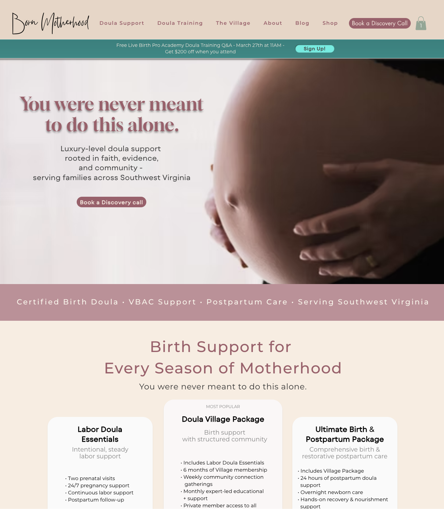

Featured Project
Born Motherhood
Website reset for a doula business focused on clarity, structure, and conversion
A full website reset for a growing doula brand that had strong heart behind the work, but lacked clear structure and flow. The original site felt scattered and wasn’t guiding visitors toward the next step. Services were hard to navigate, the shop felt disconnected, and the overall experience didn’t reflect the level of care behind the business. I restructured the site from the ground up — simplifying navigation, clarifying services, and creating a more intentional user journey that connects the brand, content, and inquiry experience.
- Rebuilt homepage structure to guide users toward action
- Simplified and reorganized service offerings
- Created a clearer, more connected navigation system
- Improved shop flow and overall user experience
- Designed a calmer, more cohesive visual experience
- Result: 4 discovery calls within 48 hours of launch